| 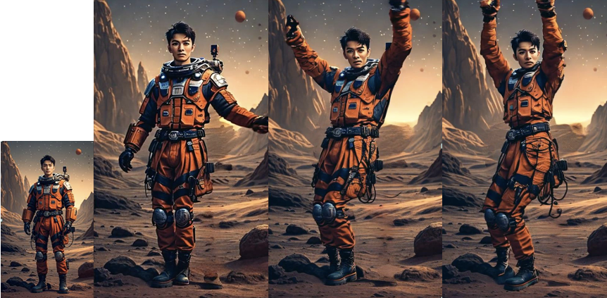 | X-Dancer: Expressive Music to Human Dance Video Generation. |
 |
MagicTalk: Implicit and Explicit Correlation Learning for Diffusion-based Emotional Talking Face Generation. |
 |
X-Dyna: Expressive Dynamic Human Image Animation |
 |
X-NeMo: Expressive Neural Motion Reenactment via Disentangled Latent Attention |
| 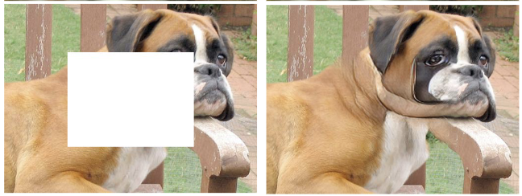 | Bridging Global Context Interactions for High-Fidelity Pluralistic Image Completion |
| 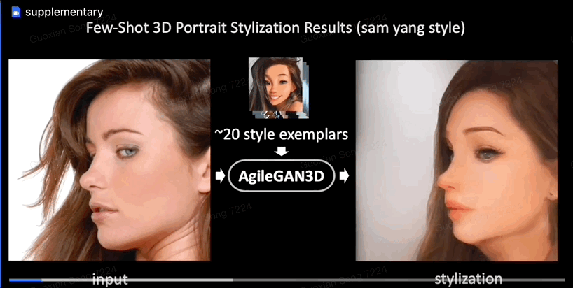 | AgileGAN3D: Few-Shot 3D Portrait Stylization by Augmented Transfer Learning |
 |
X-Portrait: Expressive Portrait Animation with Hierarchical Motion Attention |
| 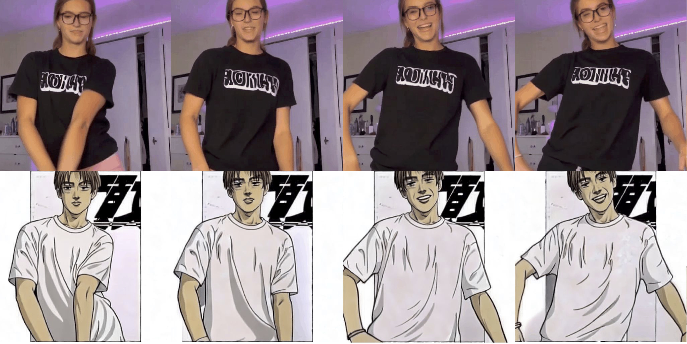 | MagicPose: Realistic Human Poses and Facial Expressions Retargeting with Identity-aware Diffusion |
 |
Controllable Diffusion for Zero-Shot Portrait View Synthesis |
| 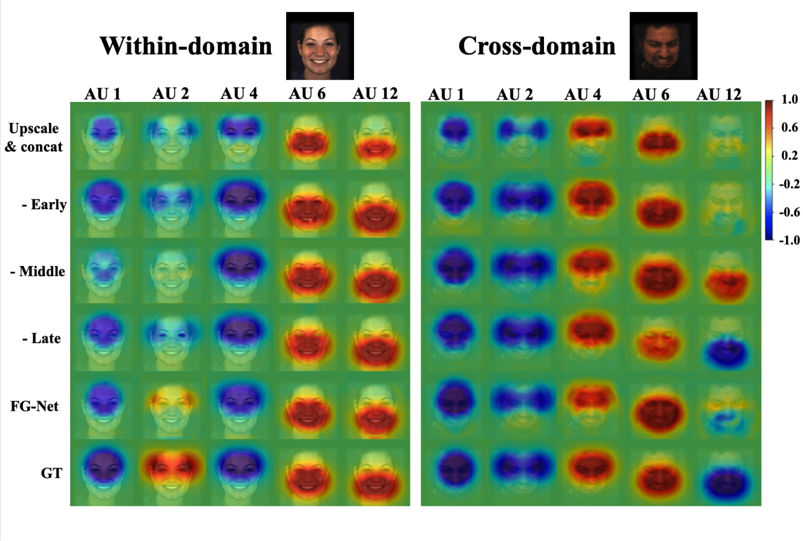 | FG-Net: Facial Action Unit Detection with Generalizable Pyramidal Features |
|
|
GETAvatar: Generative Textured Meshes for Animatable Human Avatars |
| 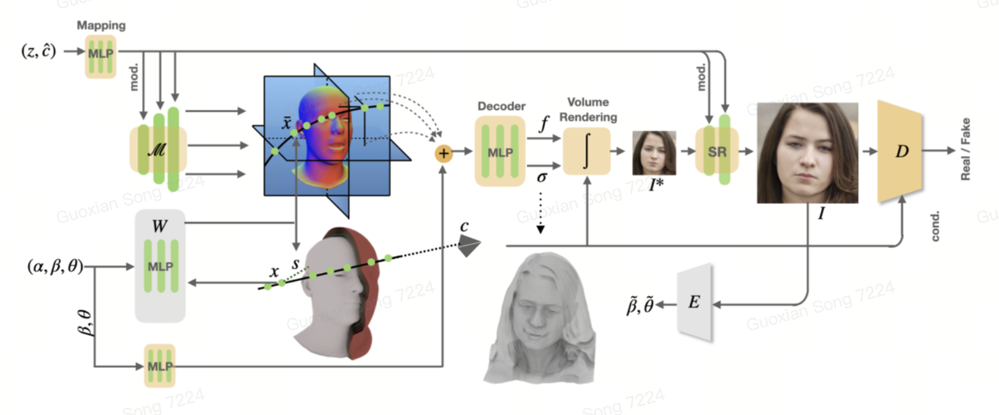 | OmniAvatar: Geometry-Guided Controllable 3D Head Synthesis |
| 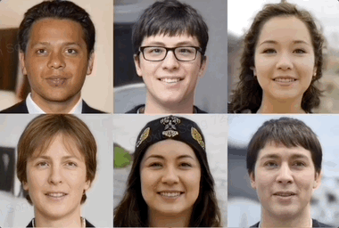 | PanoHead: Geometry-Aware 3D Full-Head Synthesis in 360 |
 |
PAniC-3D: Stylized Single-view 3D Reconstruction from Portraits of Anime Characters |
|
|
AgileAvatar: Stylized 3D Avatar Creation via Cascaded Domain Bridging |
 |
Real-time Shadow-aware Portrait Relighting in Virtual Backgrounds for Realistic Telepresence |
 |
AvatarGen: A 3D Generative Model for Animatable Human Avatars. |
| 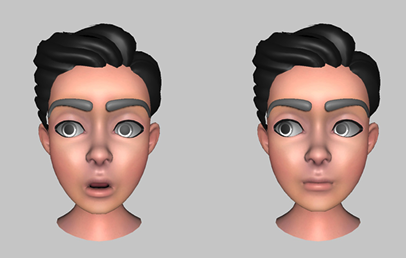 | Using Augmented Face Images to Improve Facial Recognition Tasks. |
 |
AgileGAN: Stylizing Portraits by Inversion-Consistent Transfer Learning. |
 |
Half-body Portrait Relighting with Overcomplete Lighting Representation |
| 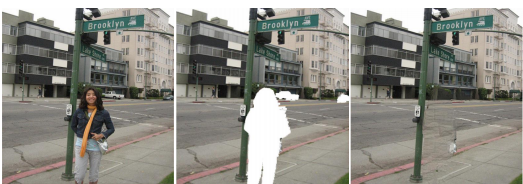 | Visiting the Invisible: Layer-by-Layer Completed Scene Decomposition |
| 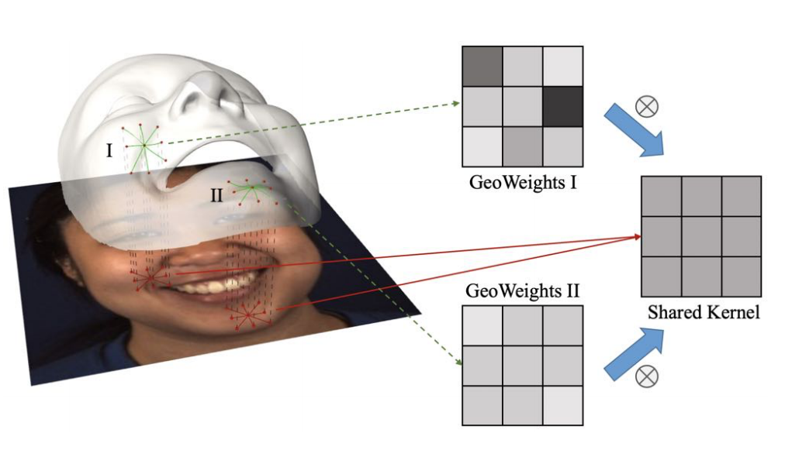 | GeoConv: Geodesic Guided Convolution for Facial Action Unit Recognition |
| 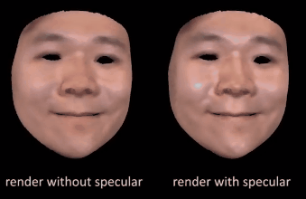 | Recovering Facial Reflectance and Geometry from Multi-view Images |
| 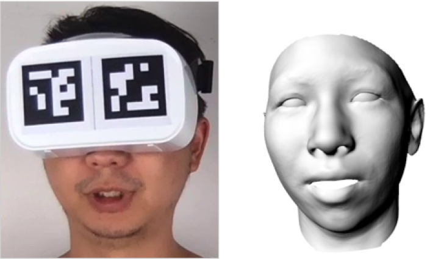 | Real-time 3D Face-Eye Performance Capture of a PersonWearing VR Headset |
| 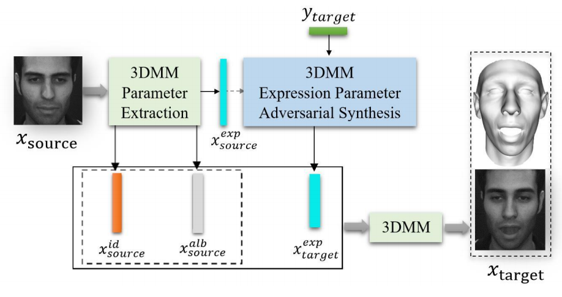 | Conditional Adversarial Synthesis of 3D Facial Action Units |
 |
FrameFab: Robotic Fabrication of Frame Shapes |
| 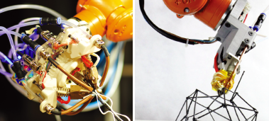 | Highly Informed Robotic 3D Printed Polygon Mesh - A Novel Strategy of 3D Spatial Printing. |
Patent
 |
A 3D avatar creation and personalized animation system using 2D image and webcam. |
| 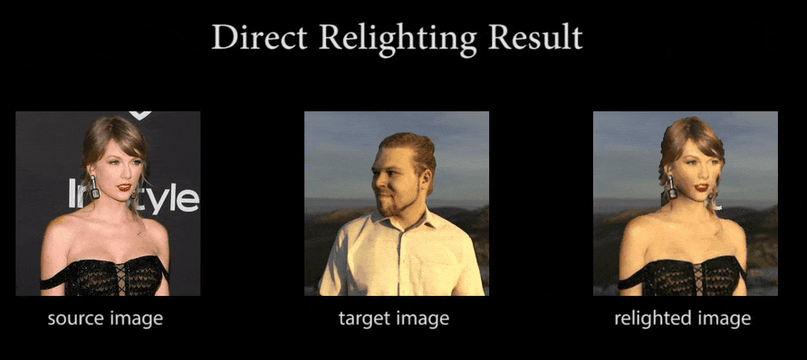 | Referred Neural Portrait Relighting. |
| 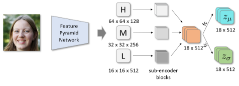 | High-Resolution Portrait Stylization Frameworks using a Hierarchical Variational Encoder. |